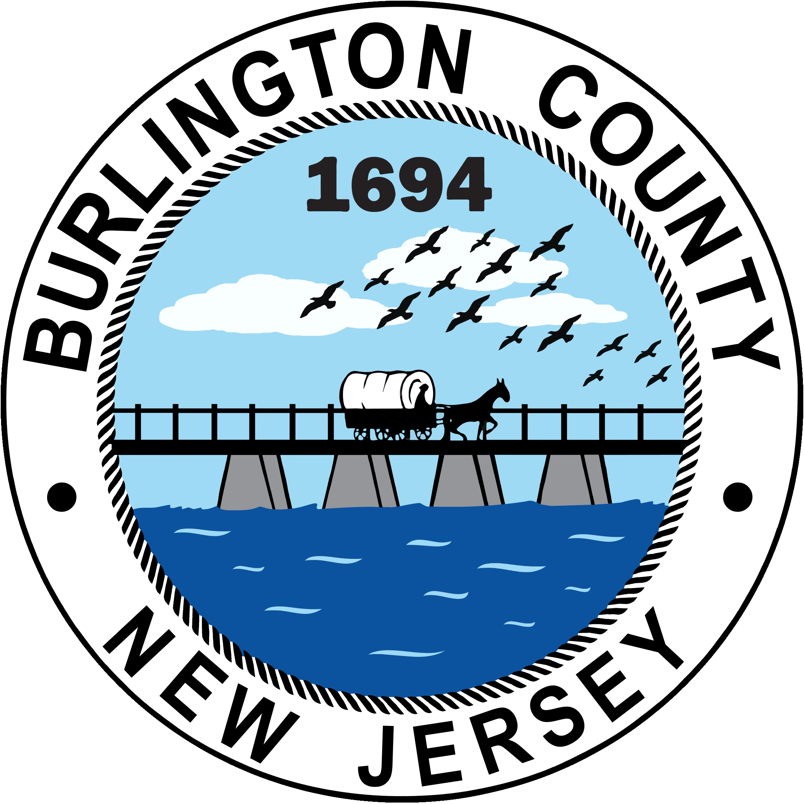
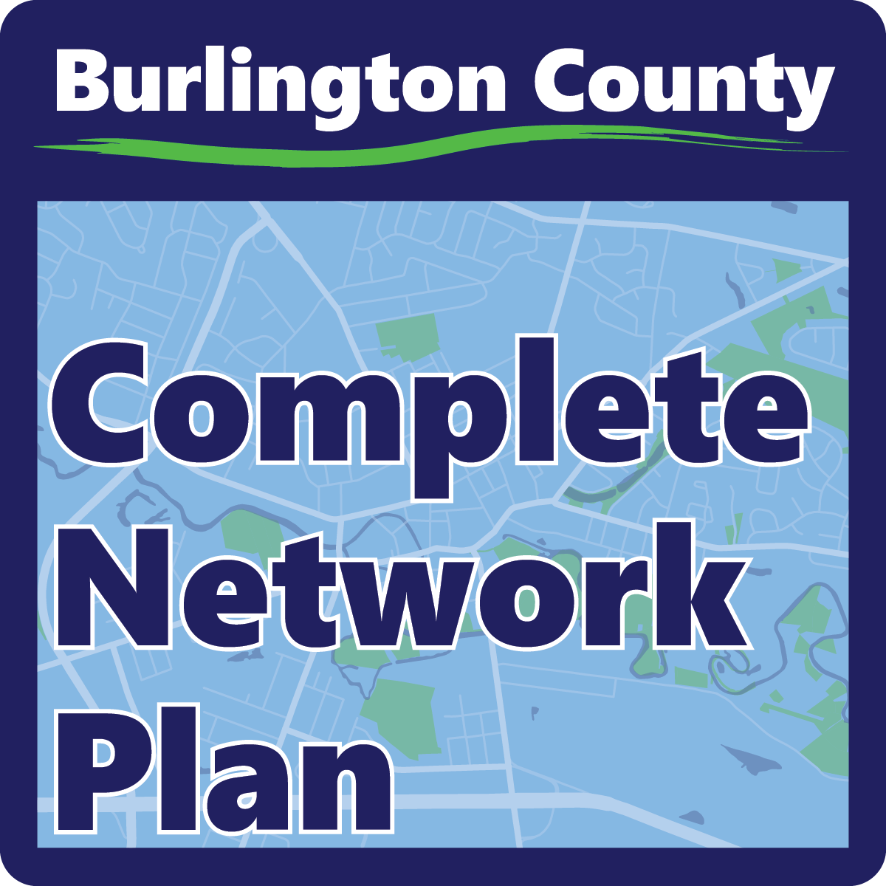
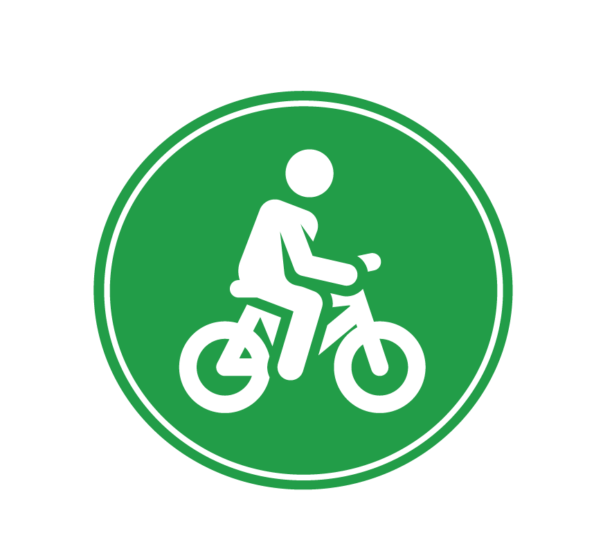
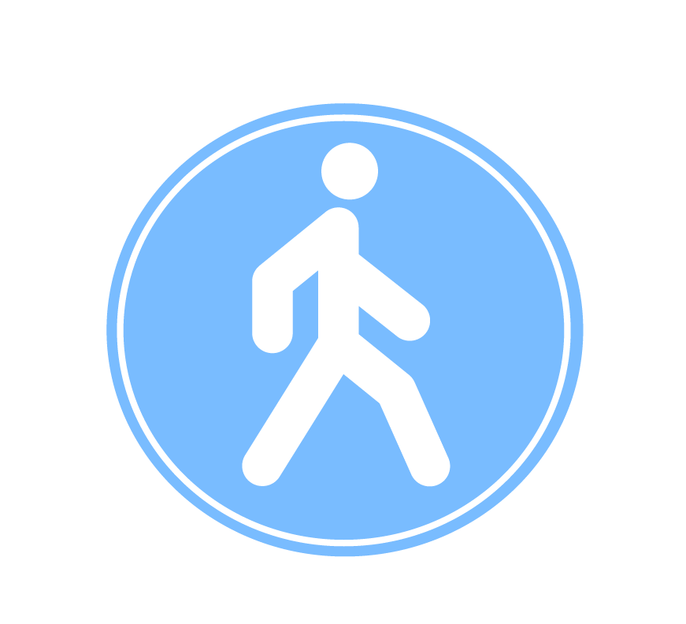

Community Input Map: Safer Streets and Trails
Learn More Regional Vision Zero
Contact
Kevin Murphy: kmurphy@dvrpc.org
Senior Manager, Office of Safe Streets
Product Number: 25114 DVRPC Policies & Data Disclaimer Sign up for our email list

Burlington County is developing a countywide Complete Network Plan to promote safe travel for all users. As part of this process, we would like you to share your safety concerns and ideas for trail and connections using this Interactive Map.
Your input is invaluable and will help inform the Complete Network Plan for the County.

Bicycle conditons
Sidewalk/crossing conditions/ADA facilities
This project builds on and complements the efforts of DVRPC’s Regional Vision Zero Action plan.
To learn more about the project and to be added to our email list, please email us at CompleteNetwork.Plan.Burlington@NV5.com.
Burlington County and its partners are developing a Complete Network Plan (BCCNP) to make roadways safer for all users. As part of this process, we asked the public to share their safety concerns using this Traffic Safety Concerns Map. Comments gathered will help inform the BCCNP by raising awareness of the public's traffic safety concerns. Comment period will close DATE. Please note: information gathered does not guarantee action. For issues of an immediate nature, contact your local road owner (city, county, or state) directly.